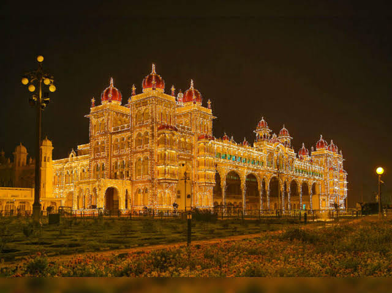
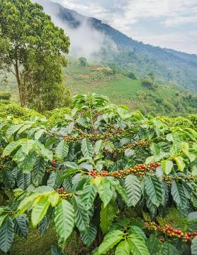
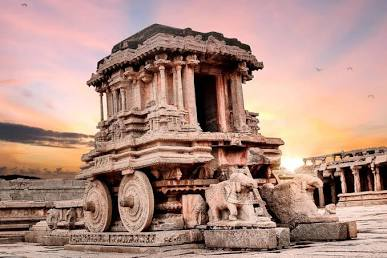
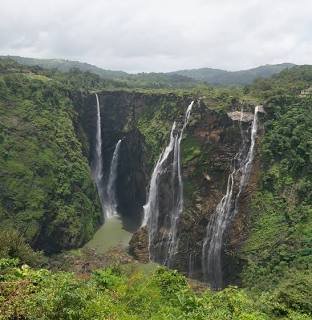
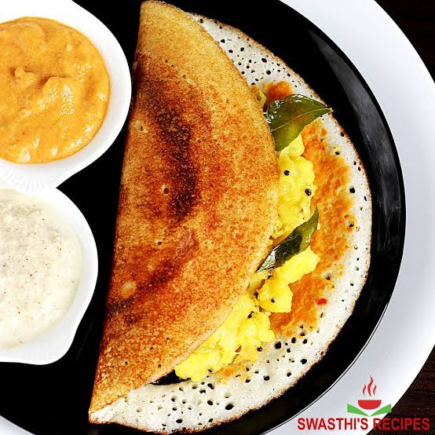
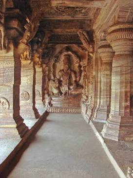
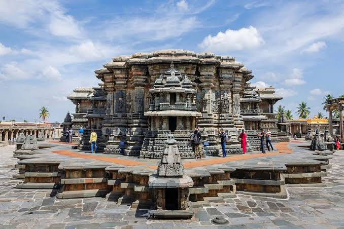
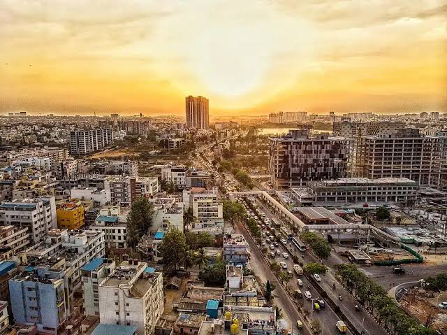

Introduction
Welcome to Karnataka, the land of Karunadu.

Karnataka is a state in southwestern India, bordered by the Arabian Sea to the west and by Maharashtra, Goa, Kerala, Tamil Nadu, Andhra Pradesh and Telangana. It was formed in 1956 by unifying Kannada-speaking regions and was renamed Karnataka in 1973. The capital is Bengaluru, and the official language is Kannada.
Geography: The state spans coastal plains, the Western Ghats (a UNESCO World Heritage biodiversity hotspot), and the Deccan plateau. Major rivers include the Kaveri, Krishna, Tungabhadra and Sharavathi, which feeds the famous Jog Falls.
Economy: Bengaluru is India's leading tech hub, often called the "Silicon Valley of India," and the state is also strong in biotechnology, aerospace, and textiles. Agriculture is significant too, with coffee (Kodagu), silk, sandalwood, and spices among its notable products. Karnataka is India's largest coffee producer.
History and culture: Karnataka has been home to great dynasties such as the Chalukyas, Rashtrakutas, Hoysalas and the Vijayanagara Empire, whose capital at Hampi is a UNESCO site. Its cultural heritage includes classical Carnatic music, Yakshagana (a traditional theatre form), and the grand Mysuru Dasara festival.
Tourism: Popular destinations include Mysuru Palace, Hampi, Coorg, Badami, Belur-Halebidu temples, Gokarna, and Bandipur and Nagarhole national parks.
Tourist Places
It consists of many tourist places.

Tourist Places of Karnataka
Mysuru Palace: A grand royal palace in Mysuru, famous for its Indo-Saracenic architecture and its dazzling illumination during Dasara.
Hampi: A UNESCO World Heritage Site with the ruins of the Vijayanagara Empire, including the Virupaksha Temple and the Stone Chariot.
Coorg (Kodagu): A hill station known for coffee plantations, misty hills, waterfalls, and Abbey Falls.
Badami: Known for its rock-cut cave temples built by the Chalukyas, set beside a scenic lake.
Belur and Halebidu: Hoysala-era temples renowned for their intricate stone carvings.
Historical Places

Historical Places of Karnataka
Hampi: The ruined capital of the Vijayanagara Empire and a UNESCO World Heritage Site, known for the Virupaksha Temple, Vittala Temple, and the Stone Chariot.
Mysuru Palace: The royal residence of the Wodeyar dynasty, built in Indo-Saracenic style.
Badami: The former Chalukya capital, famous for its rock-cut cave temples and the Bhutanatha Temple.
Pattadakal: A UNESCO World Heritage Site with a group of Chalukyan temples blending northern and southern architectural styles.
Aihole: Called the "cradle of Indian temple architecture," with over a hundred early temples.
Belur and Halebidu: Hoysala temples renowned for their detailed stone sculptures.
Somanathapura: Home to the Chennakesava Temple, a fine example of Hoysala architecture.
Shravanabelagola: A Jain pilgrimage site with the 57-foot monolithic statue of Gommateshwara (Bahubali).
Waterfalls and Hill Stations

Waterfalls of Karnataka
Jog Falls: One of India's highest waterfalls, formed by the Sharavathi River near Shivamogga, spectacular during the monsoon.
Abbey Falls: A scenic waterfall in Coorg, surrounded by coffee and spice plantations.
Shivanasamudra Falls: Twin falls (Gaganachukki and Bharachukki) on the Kaveri River, near Mandya.
Hebbe Falls: A two-stage waterfall inside a coffee estate near Kemmangundi in Chikkamagaluru.
Magod Falls: A tall waterfall on the Bedti River near Yellapur in Uttara Kannada.
Famous Foods

Famous Foods of Karnataka
Bisi Bele Bath: A spicy, flavourful rice dish cooked with lentils, vegetables, and a special spice blend.
Masala Dosa: A crispy dosa filled with spiced potato, especially famous from Davanagere and Bengaluru.
Mysore Pak: A rich sweet made from ghee, sugar, and gram flour, originating in Mysuru.
Ragi Mudde: A healthy ball of finger millet, usually eaten with sambar or saaru.
Neer Dosa: A thin, soft rice crepe popular in coastal Karnataka.
Idli and Vada: Steamed rice cakes and crispy lentil fritters served with chutney and sambar.
Image Gallery
A few glimpses of Karnataka. For more, browse the full photo gallery.
-
Mysuru Palace -
Hampi -
Coorg -

Badami -

Belur -
Jog Falls -
Masala dosa -

Bengaluru
Travel Information
Travel Information for Karnataka
By Air: Kempegowda International Airport in Bengaluru is the main gateway, with
flights from across India and the world. Other airports include Mangaluru, Hubballi, Belagavi, and
Mysuru.
By Train: Bengaluru, Mysuru, Hubballi, and Mangaluru are major railway hubs with good
connections to other Indian cities. Hampi is reached via Hosapete Junction.
By Road: Karnataka has a wide network of national highways. KSRTC and private buses
connect Bengaluru with almost every town, including Mysuru, Coorg, Hampi, and Gokarna.
Local Transport: Bengaluru has the Namma Metro and BMTC city buses. Autos, taxis, and
app-based cabs are available in most cities. Self-drive cars and bikes can be rented in tourist areas.
Best Time to Visit: October to February is ideal for most of the state, with pleasant
weather.